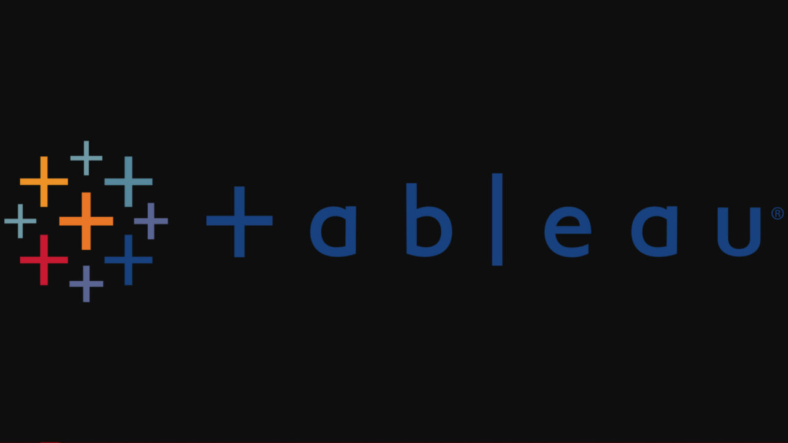
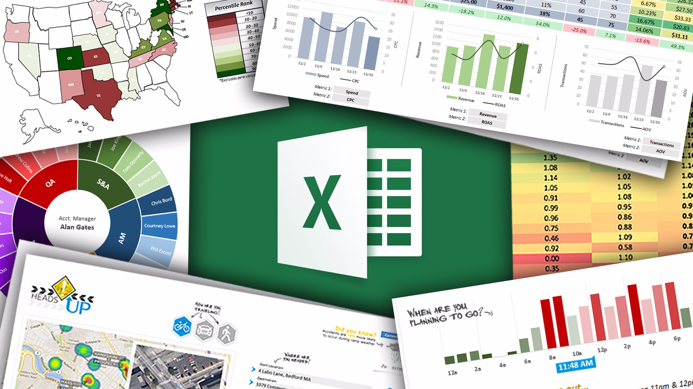

In this project, I cleaned Housing Data in SQL Server.
This project contains sql queries and detailed comments used in the data cleaning. Some of the
queries used include: a self JOIN and ISNULL to populate the property address,
CONVERT(Date) to standardize the Date, SUBSTRING and CHAR-INDEX as well as
PARSENAME to split the Address, CASE STATEMENT, CTE and so on.

This project contains queries, comments and detailed steps in the exploration of Covid 19 datasets
in sql.
The dataset was first formatted in Excel, explored and transformed in sql, using queries
like CTE, Partition by and JOINS.

After querying the Covid 19 data, the datasets needed for visualization was transferred to Excel for
more formatting (like changing the NULLS to 0, so Tableau doesn’t read them as a string).
The cleaned data was then visualized in Tableau.
Project Aim
Determine the best locations to rent out an Airbnb (locations with highest income rate), the best period to put up an Airbnb for sale
and to visualize the average income per bedroom.
Tool used: Tableau.
Report/Recommendations
I created visualizations showing the price per zip code and a map showing the locations which charges the highest for an Airbnb. I then created a simple visualization
showing the best period to rent out Airbnb’s, which as shown
in the graph, is in the summer(June, July, and August) and also from September to
December, towards the end of the year when people travel for the holidays. Depicted a graph showing the average price per bedrooms and the annual income each
bedroom makes. The 6 Bedroom Airbnb with an average rent price of $584.8 makes the
most money annually. And Airbnbs with 1 bedroom with an average rent price of $96.2
makes the least. Although the 1bedroom’s are low cost upfront, they make the least
money. The higher the bedrooms, the higher the income. Showed a distinct count of the bedroom listings; with 1bedroom’s having the highest
listings and 6bedrooms having the lowest, which means less competition for Airbnbs with
higher bedrooms.

Project Aim
Analyze 4 years of coffee bean sales in order to determine customer
trends, sales performance per country, and overall sales over the years.
Technique used
Data Gathering: I used XLOOKUP as well as INDEX MATCH to gather customer and product data respectively.
Populated the ‘Sales’ column using Multiplication formula: Unit Price x Quantity sold, then
used Multiple IF Functions to transform the ‘Coffee Type’ and ‘Roast Type’ names.
Number Formatting: converted size, unit price and sales columns. Then I
checked for duplicates, converted Range to Table for easy future updates,
created Pivot Table and Charts for visualization,
inserted Timeline and Slicers.
Used XLOOKUP to create ‘Loyalty Card’ column and finally
updated the Pivot Table using ‘Report Connections’.
Report
Created a dashboard with various visualizations, filters and timelines to filter through the years,
products, customers and countries. Visualizing the data this way makes it easy to get quick insights on any segment of the
dashboard. Findings: US holds the highest overall sales per country, with UK being the least.
Robusta has the lowest cumulative sales per year.

Project Aim
Provide technical insights on SuperHero U's Facebook marketing campaign Ads that should be discontinued as a result of low reach and
impressions.
Project Breakdown
Performed Data Cleaning and Transformation using Microsoft Excel.
Created a report showcasing statistical visualizations of the campaign performance using
Tableau.
Provided prescriptive analysis on the campaign with the lowest performance which helped
reduce the budget spent.

The dataset consists Housing prices in King County, Washington from sales between May 2014 and May 2015.
Project Breakdown
This project was executed completely on Tableau.
Created various visualizations depicting the average house sales price in each zipcode on the basis of
the number of bedrooms, bathrooms, views and conditions.
Filters and calendar widget are added to filter through the years.
REPORT/recommendation
Houses with 3-4 bedrooms, 1-3 bathrooms, and within the range of 200k-600k are the most sold houses.
To ensure high profitability, invest within this range.

This dataset is a survey of Data Professionals. The data cleaning and transformation was completely done in PowerBI. Techniques used: can be found in the ‘Applied Steps’ header in PowerBI.
Project Aim
Clean and transform the dataset into a useable one that is fit for visualization.
Create charts depicting the average salary of data professionals, the most utilized programming language by data
professionals (breaking it out by the job title), create a tree map chart filtering by the average salary per country, gauging the
satisfaction with salary and work life balance using the gauge graph and finally, difficulty to break into data.
Report
Data Scientists have the highest salary out of all the data professionals with database developers earning the least. The most
widely used programming language is Python and the least is Java. Data professionals in countries like the United States and
Canada earn more than data professionals in countries like India or Nigeria. The average data professional is happy with the
work life balance but not satisfied with the work life balance.

This project is a Bike Sales Dataset. The Data Cleaning, spreadsheet analysis, and visualizations were all excuted in Excel.
Project Breakdown
Depicted pivot tables and visualizations showing the average income of customers (breaking it down by gender), their age
bracket and commute to work. All of these were analyzed to show their correlation to bike purchase.
Report
Single, middle-
aged males with an average income of over $50,000 and a commute distance of 0-1mile purchase more bikes than any other
demographic, which makes them target customers. Customers with less than 1mile of commute distance are more likely to
purchase bikes because of the short commute distance. Filters were added to the visualizations for quick insights into other informations.